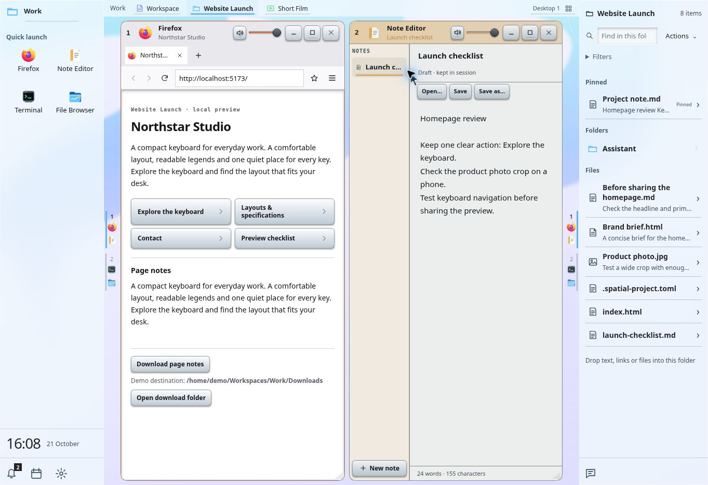
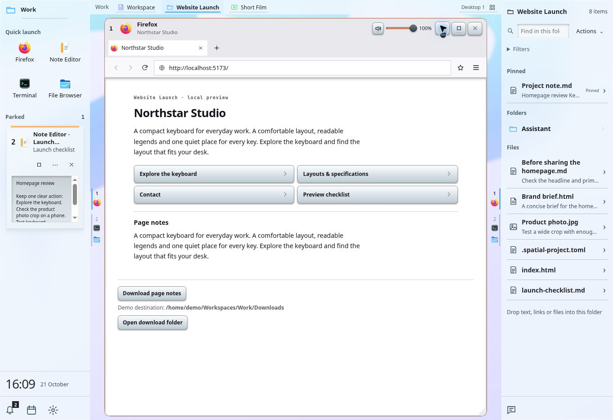
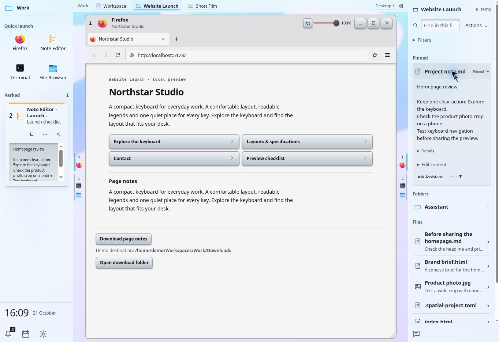
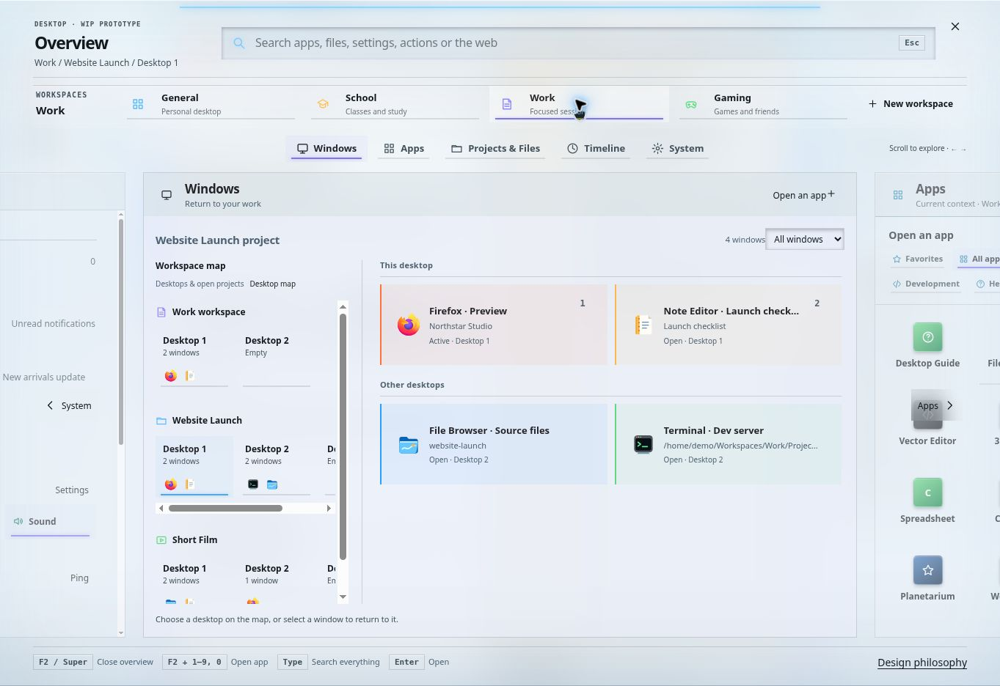
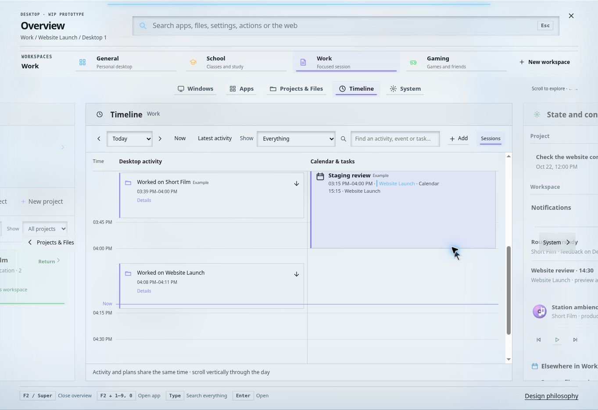
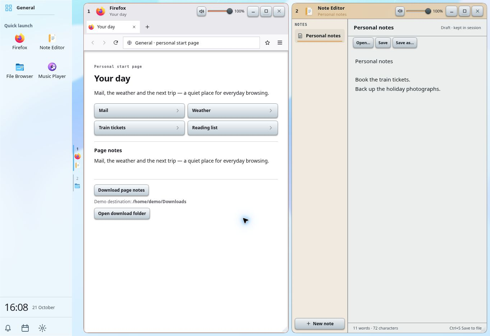
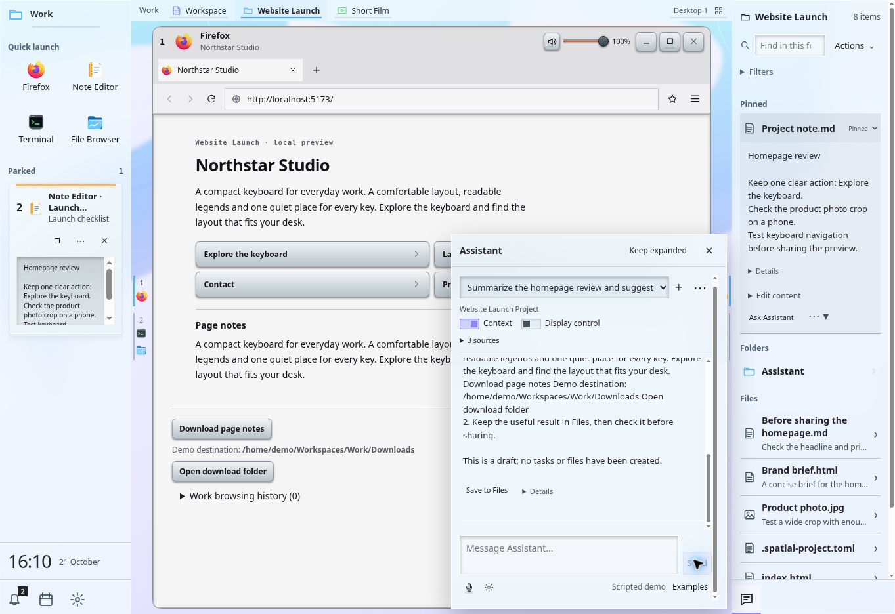

A DESKTOP EXPERIMENT BY XEF
Spatial Desktop
I started Spatial Desktop after watching Scott Jenson’s talk. It inspired me to explore how a desktop could support everyday work through spatial, associative, and episodic memory: finding work by where it is, what it relates to, or when it happened.
My own frustrations with managing overlapping windows shaped the design. I wanted to explore how a desktop could keep windows, files, and related materials together when I switch activities or return after an interruption. I also want an integrated Assistant that works alongside me using the same windows and ordinary files.
The question I want to test is whether these connections make everyday work easier to follow and resume, while keeping the effort of organizing it low.
This is a browser prototype for exploring the design. Applications and operating system behavior are simulated, and Assistant responses are scripted. Native desktop integration remains future work.


01 / WINDOWS AND PARKING
Keeping windows visible
When I work on a Jira request, I might have an editor, the request itself, email, Teams, and several other windows open. At seven or ten windows, keeping track of everything becomes a task of its own. I often end up maximizing one window because arranging several beside each other takes too much effort.
Spatial Desktop uses automatic tiling to keep windows visible without constant rearranging. It is designed around mouse use: I can move windows into place and scroll between a vertical stack of desktops. Edge markers show the desktops and the applications open on them. Floating windows provide an exception when a task needs it.
Parking gives windows a visible place when I set them aside. A parked window can retain useful content or controls, so a note or music player can remain useful in its smaller form. Parked windows stay available as I move through the desktops of the current project or ordinary workspace column.
The numbered app hotbar provides direct access to individual windows, including separate instances of the same application. Together, these choices are meant to help me keep a visual map of my work as the number of windows grows.


02 / PROJECTS AND FILES
Giving an activity its own place
I personally use one project for each Jira request. Someone editing a video might use a project for the entire video, even though it involves many separate tasks. The size of a project depends on the work.
A project brings together its folder, related resources, windows, and its own column of desktops. I can move between requests while keeping their environments separate. The ordinary workspace also supports working without a project.
The materials belong to the activity as a whole. One request might involve code, screenshots, reference pages, notes, and a finished document. I want to reach those materials while working on any of its outputs.
Ordinary files are the foundation. The Files panel makes project and workspace files accessible, including text notes that can be expanded in the panel. The same files can be used by different applications and by the Assistant. Where the prototype records an item’s origin, versions, or links to other items, those connections help explain how a result was made.


03 / OVERVIEW
Finding work through Overview
Overview brings several ways of finding work into one place. I can locate an open window, launch an application, find a project or file, or look back through Timeline.
These views address different things I might remember. Sometimes I know which application I was using. Sometimes I remember the project or recognize a material. Sometimes I only remember when I was working on it.
For example, I might return to a request through its open windows, through its project files, or through an earlier session in Timeline. Each route provides a different starting point for picking up the work.
This is the role I want Overview to have: making those routes accessible together, so I can use whichever clue I still have.


04 / TIMELINE
Remembering the work around a file
I often find my place by reviewing files and leaving myself a simple text note. Timeline adds another way back.
It brings recorded activity together with calendar events, tasks, and reminders. If I remember opening a document before a meeting, the meeting gives me a point from which to explore nearby activity. Past work and future plans share the same time view.
The prototype groups recorded activity into sessions using time gaps and changes of project or workspace. Sessions can have notes and links to related files, pages, and other recorded items. This provides a way to reopen the relevant materials; it does not restore a complete historical state of the computer.
The question is how much history helps. A long list of window switches can become another thing to search through. I want Timeline to make it easier to recognize a useful session and reach its materials. Clearer session summaries and less repetition are the next improvements I want to explore.


05 / WORKSPACES
Separating work and personal life
I use the same computer for work and personal things. Their files, accounts, and notifications can easily get mixed together. A personal notification appearing during a work screen share is one obvious example.
Workspaces aim to provide a separation similar to different user environments, with quick switching inside the desktop. Each has its own home folder and context for application data, clipboard, and notifications. Documents and downloads should land in the appropriate place by default. Browser data is one example of this broader separation.
Some things belong to the computer as a whole. The demo shares system appearance, hardware connections, and master sound settings. Its workspace separation is a model of the intended experience, rather than implemented operating system security isolation.
I also want deliberate movement between environments to remain possible. Taking a music player from a personal workspace into a work workspace can be useful. The boundary should support intentional transfers while keeping everyday activity separate.


06 / ASSISTANT
Working alongside an Assistant
I want the Assistant to work in the desktop alongside me. It could open a browser, show information, work with files, and use ordinary application windows while I watch and intervene.
While developing Spatial Desktop, for example, I could keep a website preview on another display and explain what I want changed. The Assistant would work on the page and show the result there. The shared environment would make it easier to discuss the work as it changes.
Projects and workspaces provide a place for this collaboration. In the demo, each has its own Assistant folder for outputs when no other destination is specified, together with its own conversation context. Results remain ordinary files that I can open and continue working on.
Access to readable context and permission to control a display are separate choices. I want to be able to follow the Assistant’s work, pause it, and take over. These interactions are explored through scripted behavior in the prototype.
Voice is another way to participate. The demo explores manual dictation, a wake phrase, and ongoing conversation, with spoken replies controlled separately. I also want to combine conversation with pasted text, code, and attachments without ending the voice session; that is a planned interaction.
This could help people who find visual navigation or mouse use difficult, including blind users. That potential needs to be developed and tested with the people who would use it.


07 / FULLSCREEN
Moving between fullscreen and other work
Fullscreen applications, especially games, should fit into the same environment. I want to be able to bring a game into a tile, check a note or another application, and return to fullscreen with little disruption.
The demo illustrates this transition. Gamescope is the intended direction for exploring it with real games. Whether it behaves reliably across games and display setups needs to be tested in a native prototype.
08 / THE EXPERIMENT
What I want to learn from the experiment
Spatial Desktop combines familiar ideas: tiling, virtual desktops, project folders, activity history, and customizable panels. I want to see what changes when they support the same work together.
My design uses explicit projects and desktop columns to provide structure. Jenson’s spatial experiment explores a more organic arrangement. That difference raises a useful question: does the structure help people keep their place, and how much effort does maintaining it require?
The next test is a whole activity: gather materials, make something, get interrupted, and return later. Can someone recognize the work, find its sources, and continue without much explanation? Can they also work comfortably without organizing everything into a project?
The browser demo lets me explore these questions before building a native desktop prototype. I want feedback on where the connections help, where they get in the way, and what the design still asks people to remember.